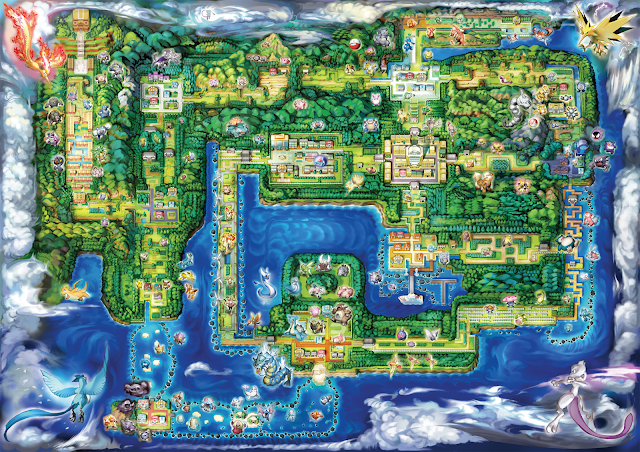
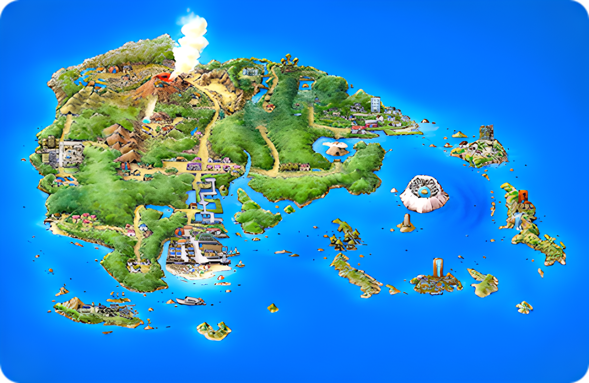
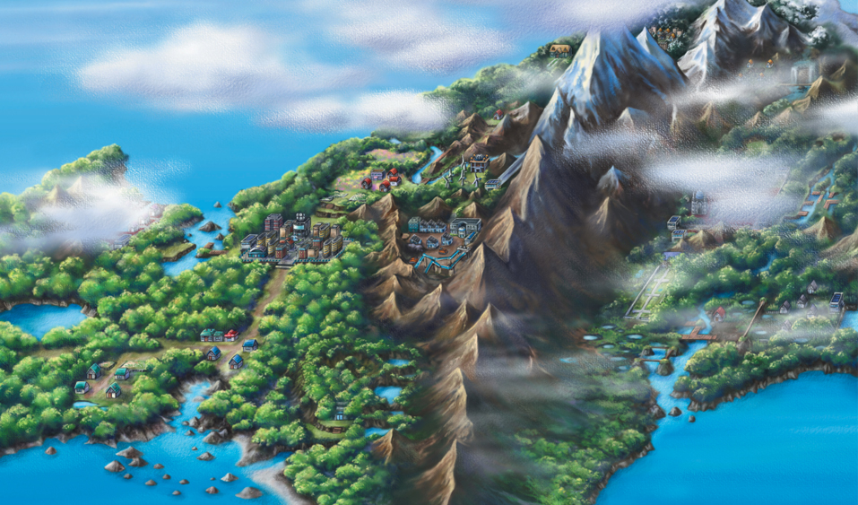
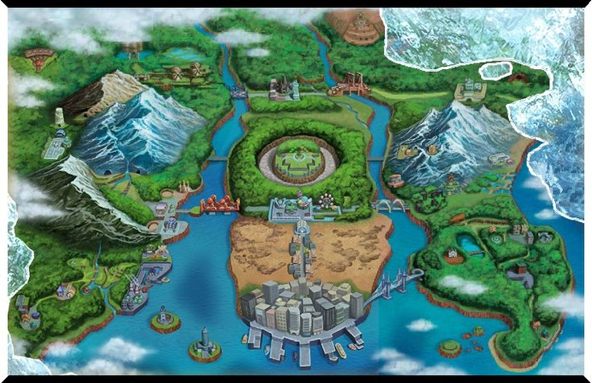
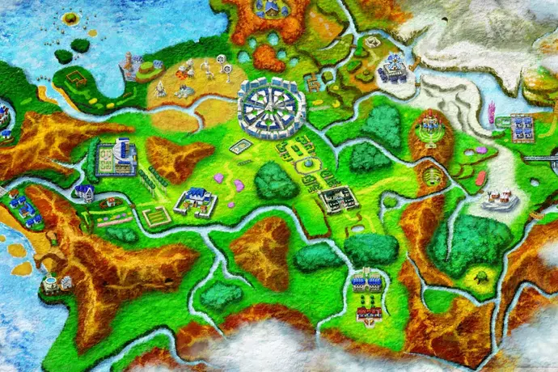
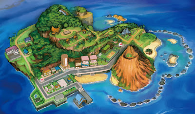

Regiões
Kanto

Kanto é um país ou região fictícia da série Pokémon. Sua geografia ébaseada na região de Kanto, uma região da
ilha de Honshu, no Japão, de onde vem seu nome. É possível notar que as formações de baía, vistas no mapa do jogo,
e as formações reais de Sagami Bay, Suruga Bay e a Baía de Tokyo são semelhantes.
Kanto localiza-se a leste de Johto, formando um pequeno continente.
Ao sul de Kanto estão localizadas as Ilhas Sevii e as Ilhas Laranjas. Hoenn, introduzido em Pokémon Ruby, Sapphire
e Emerald, é supostamente localizado a seu sudoeste. A norte localiza-se Sinnoh, e as regiões de Unova e Kalos
encontram-se a oeste de Johto e Kanto. A região de Alola, um arquipélago, localiza-se no sudeste do país.
Johto

Johto apareceu em Pokémon Gold e Silver & Pokémon Crystal e está a Oeste de Kanto. Possui uma nova Liga Pokémon e
várias áreas especiais. A Equipe Rocket também está aqui, mas em força menor. No mangá, há uma outra organização: o
Neo Team Rocket.
Mais uma vez com base em uma área do Japão, a geografia de jogos baseia-se nas regiões de Kansai e Chubu do país. A
configuração do jogo compartilha com estas regiões a sua abundância de templos, um projeto arquitectónico famoso das
regiões de Kansai e de Tokai.
Johto possui muitas florestas, especialmente em seu centro-oeste. Possui em seu relevo também diversas cadeias
montanhosas, especialmente na área mais ao leste, próximo à fronteira com Kanto. Entre seus principais montes estão
o Monte Mortar e o Monte Silver. Em seu lado mais oeste, entre baixas planícies, há a maior concentração populacional.
No país não há muitos rios, com exceção de pequenos riachos que nascem das montanhas ao leste e correm para o oceano,
ao sul. No sudoeste existe uma baía, e ao norte, um grande lago ao norte, o chamado Lago da Fúria, que acredita-se
ter sido formado por chuvas em uma antiga cratera vulcânica. A região não possui indícios de atividade vulcânica. O
modo de vida de seus habitantes é bastante ruralizado, comparado aos seus vizinhos de Kanto.
Nos jogos, as cidades de Johto são: New Bark Town; Cherrygrove City; Violet City; Azalea Town; Goldenrod City;
Ecruteak City; Olivine City; Cianwood City; Mahogany Town; e Blackthorn City. O segundo volume da série de ArtDex
sobre Pokémon é todo dedicado a Johto.
Hoenn

A região de Hoenn foi introduzido em Pokémon Ruby e Sapphire. Esta localizada a Sudoeste de Kanto e Johto.
Hoenn foi baseada na região de Kyushu, pois de acordo com o diretor de Ruby e Sapphire, Junichi Masuda, Ruby e
Sapphire ele tinha o desejo de recuperar suas memórias de estar lá nas férias de verão. Hoenn situa-se a 90°
anti-horário de orientação no mundo real de Kyushu, devido à crença da equipe de desenvolvimento que iria melhorar
jogabilidade.
A região de Hoenn possui muitos ambientes dramáticos de florestas tropicais a desertos, mas sua característica
mais marcante é a abundância de água, um forte contraste com outras regiões da série principal. Grande parte da
região é coberta por água, quase igual em tamanho ao continente, exemplificando a temática dos jogos. Existem várias
ilhas grandes e populosas fora do continente, acessíveis apenas por rotas aquáticas, muitas das quais são profundas o
suficiente para mergulho .
Grande parte da área interior é arborizada ou montanhosa, então as cidades mais notáveis são encontradas no litoral.
Hoenn tem um vulcão ativo, Mt. Chimney , no noroeste da região. As cinzas do Monte Chimney caem regularmente nas
cidades e rotas próximas.
Nos jogos, as cidades de Hoenn são: Littleroot Town; Oldale Town; Petalburg City; Rustboro City; Dewford Town;
Slateport City; Mauville City; Verdanturf Town; Fallarbor Town; Lavaridge Town; Fortree City; Lilycove City;
Mossdeep City; Sootopolis City; Pacifidlog Town; e Ever Grande City.
Sinnoh

Sinnoh apareceu nos games de Quarta Geração: Pokémon Diamond e Pearl e Pokémon Platinum. Baseada na ilha mais
setentrional do Japão, Hokkaidō. A região foi concebido para dar uma sensação "do norte", com algumas rotas
totalmente cobertas por neve.
O clima de Sinnoh varia muito e a maior parte da região é composta por áreas montanhosas. Ao contrário de Hoenn,
que está localizada no sul, onde o clima é mais quente, Sinnoh está localizada nos limites norte do mundo, onde
a temperatura é mais baixa. Faz tanto frio na parte norte da região que a neve cai constantemente.
A região tem rios que se originam das terras altas e montanhas no centro e que atravessam a região passando por
muitas cidades, vilas e rotas. Existem muitos lagos em toda a região, como o Lago Acuity , o Lago Valor e o Lago
Verity. Muitas grandes cidades se estabelecem à beira-mar ou próximas a ela; alguns deles têm portos grandes.
Unova

Unova é a região do mundo Pokémon que aparece no jogo Pokémon Black e White.
De acordo com a equipe de desenvolvimento, Unova está "localizado muito distante de Kanto, Johto, Hoenn, e Sinnoh.
" No livro Pokémon Pia, o diretor Junichi Masuda revela que Unova (Isshu) foi baseada em New York City.
Unova é palco de grandes áreas urbanas, um porto, um aeroporto, um parque de diversões, e várias cadeias de
montanhas. Além disso há uma diversidade de novas paisagens, a Região Unova é também o lar de uma diversidade de as
pessoas que variam em tonalidade da pele e profissões. O nome em japonês é derivado das palavras muitos tipos de
pessoas e Pokémon que se vê de perto parecem apenas um tipo da vida de longe. A temporada 14 do anime em diante,
intituladas coletivamente no Japão como Best Wishes!, se passam em Unova.
Kalos

Kalos é a região de X e Y. Uma cidade muito urbana, um palácio de ouro, e uma terra árida com edifícios-pod como
são vistos no trailer. Os editores do GamesRadar notaram uma semelhança marcante com uma grande torre em segundo
plano em relação à Torre Eiffel e semelhança de um palácio local com o Palácio de Versalhes. Estes fatos levaram-lhes
a especular que a região corresponderia à França do mundo real, e a região de Kalos foi mesmo baseada na França.
Alola

Alola, é a região de Pokémon Sun e Moon. A região de Alola foi revelada em 10 de maio de 2016 (mas houve uma referência
a região nos jogos Pokemon X e Y), no trailer de Pokémon Sun e Moon. No trailer, foi divulgada a imagem de uma Ilha,
que seria parte da nova região. Alola é uma região que foi baseada no Havaí.
Galar

A região de Galar é apresentada nos jogos de Pokémon Sword e Shield, e na série de Pokémon (2019). Os jogos foram
revelados em fevereiro de 2019 e lançados em novembro do mesmo ano, já o seriado foi lançado dois dias após o lançamento
dos jogos (17 de Novembro de 2019).
Galar é uma região inspirada no Reino Unido, notável na geografia do local.
Paldea